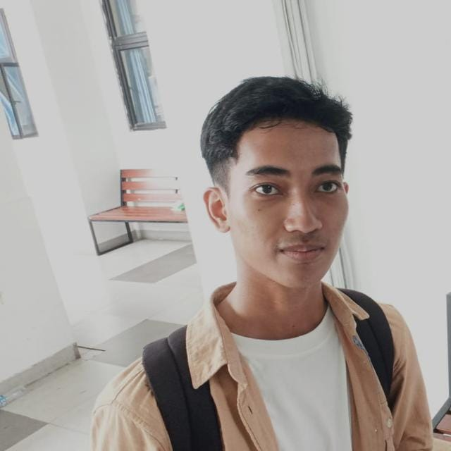

|  |
Short BiographyNamaku Rafi Ruzain Raba, anak kedua dari tiga bersaudara. Hobiku menjelajah alam dan mencoba hal-hal baru di luar ruangan. Aku adalah mahasiswa di Program Studi Ilmu Komputer, Universitas Negeri Jakarta. |
- CS101 Introduction Computer Science
- SDN MAKASAR 07 PAGI
- SMPN 275 JAKARTA
- SMKN 71 JAKARTA
- UNIVERSITAS NEGERI JAKARTA
Aku orangnya penasaran sama banyak hal dan senang belajar, baik lewat pengalaman di alam maupun dari perkuliahan. Dari situ aku jadi terbiasa untuk berpikir lebih terbuka, kritis, dan nggak gampang menyerah. Aku percaya kalau setiap usaha kecil yang konsisten bisa bikin aku berkembang lebih baik
Ke depannya, aku pengin jadi profesional di bidang teknologi yang nggak cuma jago secara teknis, tapi juga bisa bikin solusi yang bermanfaat buat orang banyak. Aku pengin menggabungkan hobi eksplorasi dengan teknologi biar bisa kasih dampak positif dan sesuatu yang baru untuk masyarakat